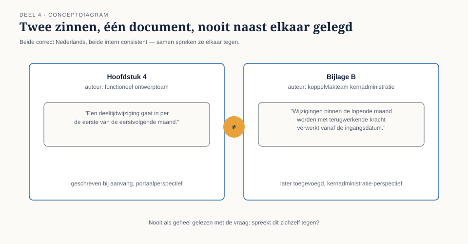
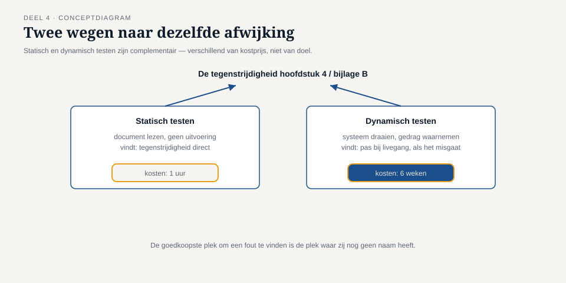

Deel 4 — Statisch testen
Reader · Ductus-cursus Testen en Kwaliteitsborging · niveau 1 (fundament) · deel 4 van 30
Dit deel sluit bevinding T4: de tegenstrijdigheid tussen de deeltijdregel in hoofdstuk 4 en die in bijlage B van het functioneel ontwerp stond er al vóór de bouw begon, en is nooit gereviewd.
Leerdoelen
Na dit deel kun je:
- uitleggen wat statisch testen is en het onderscheiden van dynamisch testen;
- de waarde van statisch testen beargumenteren met een concreet kostenvoorbeeld;
- de reviewsoorten (informele review, walkthrough, technische review, inspectie) onderscheiden naar formaliteit en toepassen;
- het reviewproces met zijn stappen en rollen toepassen op een documentfragment;
- succesfactoren voor reviews benoemen en veelvoorkomende faalpatronen herkennen;
- het doel en de werking van statische analyse uitleggen, met voorbeelden buiten code;
- beargumenteren waarom de goedkoopste fout meestal nog in een document staat.
Studielast: één dagdeel klassikaal, circa drie uur zelfstudie.
1. Eén uur tegenover zes weken
Ergens in hoofdstuk 4 van het functioneel ontwerp van WGP 2.0 stond: "Een deeltijdwijziging gaat in per de eerste van de eerstvolgende maand." In bijlage B, opgesteld door een andere auteur voor een andere doelgroep (de koppeling met de kernadministratie), stond: "Wijzigingen met een ingangsdatum binnen de lopende maand worden met terugwerkende kracht verwerkt vanaf de daadwerkelijke ingangsdatum."
Beide zinnen zijn op zichzelf correct Nederlands, beide zijn intern consistent, en samen spreken ze elkaar tegen voor precies het geval dat later de storing veroorzaakte: een deeltijdwijziging die middenin de maand ingaat. Jelle Bakker bouwde volgens hoofdstuk 4. De kernadministratie was gebouwd — door een ander team, jaren eerder — volgens de logica van bijlage B.
Niemand heeft dit document ooit als geheel gelezen met de vraag: spreekt dit zichzelf tegen? Een ervaren reviewer met een uur de tijd had de twee passages naast elkaar gelegd en de vraag gesteld. Zes weken bouw, een teruggedraaide livegang en een onbekend aantal verloren mutaties waren dan nooit gebeurd.

Kernzin — De goedkoopste plek om een fout te vinden is de plek waar hij nog geen naam heeft: een zin in een document, vóórdat iemand haar in code heeft omgezet.
Dit is bevinding T4.
2. Wat statisch testen is
Statisch testen is het beoordelen van een werkproduct zonder het uit te voeren: een document lezen, een model bekijken, code doorlezen zonder haar te draaien, een tool laten controleren zonder uitvoering.
Het onderscheid met dynamisch testen zit dus niet in wát je onderzoekt, maar in óf je het systeem laat draaien.
| Statisch testen | Dynamisch testen | |
|---|---|---|
| Object | elk werkproduct: document, model, code | een draaiend systeem of onderdeel |
| Uitvoering | nee | ja |
| Vindt typisch | tegenstrijdigheden, ambiguïteit, ontbrekende gevallen, structuurproblemen | gedrag onder concrete invoer |
| Kosten per gevonden afwijking | laag | hoger, oplopend naarmate later |
| Voorbeeld uit deze casus | de tegenstrijdigheid in hoofdstuk 4/bijlage B | het uitblijven van de foutmelding bij livegang |

2.1 Statisch testen is meer dan alleen code reviewen
Een hardnekkig misverstand: statisch testen wordt vaak versmald tot codereview. In werkelijkheid is elk werkproduct statisch te beoordelen — een eis, een procesmodel, een testgeval, een gebruikershandleiding, een presentatie voor de stuurgroep. Bij Meridiaan had een statische toetsing net zo goed op de testgevallenlijst uit deel 2 kunnen worden toegepast, en had daar de zeventien overbodige testgevallen eerder aan het licht gebracht.
3. Reviewsoorten
Reviews verschillen in formaliteit, en formaliteit is een keuze — geen kwaliteitskeurmerk op zich. Meer formaliteit kost meer tijd en levert doorgaans meer op bij belangrijke, risicovolle of complexe documenten; minder formaliteit is sneller en past bij documenten met een korte levensduur of laag risico.
| Soort | Formaliteit | Typisch doel | Wie |
|---|---|---|---|
| Informele review | laag | snel een tweede blik | een collega, kort |
| Walkthrough | gemiddeld | de auteur leidt de sessie, licht toe, haalt begrip en instemming op | auteur + belanghebbenden |
| Technische review | gemiddeld tot hoog | vakinhoudelijke beoordeling door deskundigen, gestructureerd maar zonder de volle formaliteit van een inspectie | vakgenoten, niet per se de auteur als leider |
| Inspectie | hoog | formeel proces met vastgestelde rollen, checklists, meetbare regels en een verslag | moderator, auteur, reviewers, notulist |

Voor WGP 2.0 was zelfs de lichtste vorm — een informele review van het functioneel ontwerp door iemand buiten het schrijvende team — voldoende geweest. De tegenstrijdigheid tussen hoofdstuk 4 en bijlage B was met een simpele kruislezing te vinden; er was geen inspectie voor nodig. Dat is precies de reden dat deze bevinding zo hard aankomt: de remedie was niet duur.
3.1 Wanneer kies je welke vorm?
Vuistregel, in lijn met principe 6 uit deel 1: de formaliteit van de review staat in verhouding tot wat er misgaat als de fout blijft staan. Een intern werkdocument met een korte levensduur verdient een informele review. Een document dat de testbasis wordt voor de kernberekening van honderdduizenden aanspraken (↗ vooruitblik niveau 3, deel 25) verdient een inspectie, met vastgelegde bevindingen en een expliciet vervolgproces.
4. Het reviewproces
Een formele review (walkthrough, technische review, inspectie) doorloopt herkenbare stappen:
- Plannen — wat wordt gereviewd, door wie, met welk doel en welke criteria?
- Kick-off — het document en het doel worden gedeeld, zodat iedereen met hetzelfde begrip begint.
- Individuele voorbereiding — elke reviewer bestudeert het document zelfstandig vóór de sessie. Dit is de meest overgeslagen stap en de belangrijkste: een reviewsessie zonder voorbereiding is een oplezen, geen beoordeling.
- Reviewbijeenkomst — bevindingen bespreken, niet oplossen. De sessie dient om te constateren, niet om ter plekke te herschrijven.
- Verwerken — de auteur verwerkt de bevindingen.
- Follow-up — controleren of de verwerking daadwerkelijk en correct heeft plaatsgevonden, en vaststellen of de exitcriteria van de review zijn gehaald.

4.1 Rollen
- Auteur — heeft het document geschreven, is niet de beoordelaar van zijn eigen werk.
- Moderator — leidt het proces, bewaakt de spelregels, is bij een inspectie een aparte, getrainde rol.
- Reviewers — beoordelen inhoudelijk, idealiter vanuit verschillende perspectieven (bij WGP 2.0: iemand die het gedrag vanuit het portaal kent, én iemand die de kernadministratie kent — precies de twee auteurs die elkaar nooit gelezen hebben).
- Notulist / scribent — legt bevindingen vast, zodat de bijeenkomst niet zelf tot document hoeft te worden.
Merk op: geen van deze rollen is "de manager die goedkeurt". Een review is geen goedkeuringsmoment maar een bevindingenmoment; de auteur beslist, met de bevindingen in de hand, wat hij ermee doet.
4.2 Succesfactoren en veelvoorkomende faalpatronen
Wat reviews laat werken:
- een helder, beperkt doel per sessie (niet "beoordeel dit hele document" maar "beoordeel of hoofdstuk 4 en bijlage B elkaar tegenspreken");
- voorbereidingstijd die daadwerkelijk wordt genomen;
- bevindingen worden vastgelegd, niet ter plekke opgelost;
- de sfeer is gericht op het document, niet op de auteur.
Wat reviews laat mislukken — en bij Meridiaan structureel ontbrak, niet alleen bij WGP 2.0:
- geen tijd ingepland: reviews worden "erbij gedaan" en de voorbereidingsstap wordt overgeslagen;
- de verkeerde reviewers: alleen mensen uit hetzelfde team, met dezelfde aannames — precies waarom de twee auteurs van hoofdstuk 4 en bijlage B elkaar nooit hebben gelezen;
- reviews als schuldvraag: als een review voelt als een beoordeling van de auteur in plaats van het document, stopt de auteur met eerlijk werk inleveren;
- geen follow-up: bevindingen worden genoteerd en daarna nergens meer gecontroleerd.
Kernzin — Een review levert alleen waarde op als iemand vooraf het document heeft gelezen. De duurste review is de review die iedereen voor het eerst tijdens de sessie zelf leest.
5. Statische analyse
Statische analyse is het geautomatiseerd beoordelen van een werkproduct zonder uitvoering, met gereedschap in plaats van mensen. Bekendst bij code (linting, complexiteitsmetrieken, het opsporen van ongebruikte variabelen of onbereikbare code), maar het principe is breder toepasbaar: een tool die een DMN-beslistabel controleert op overlappende of ontbrekende regels doet in wezen hetzelfde als een reviewer die hoofdstuk 4 naast bijlage B legt — alleen sneller, consequenter, en zonder vermoeidheid.

Statische analyse vervangt de menselijke review niet. Gereedschap vindt structurele problemen (een variabele die nooit gebruikt wordt, een beslistabel met een gat) maar geen betekenisproblemen (twee zinnen die grammaticaal correct zijn en elkaar toch tegenspreken, zoals bij WGP 2.0). Beide zijn nodig, en zij vinden verschillende dingen.
6. TMAP-lens
Hoe heet dit daar. Reviews en statische toetsing worden in TMAP niet als apart proces benoemd maar verweven in de dagelijkse manier van werken van een cross-functioneel team: peer review van code is de norm, en "drie-amigo's"-achtige sessies (ontwikkelaar, tester, product owner samen de acceptatiecriteria doornemen vóórdat gebouwd wordt) vervullen precies de functie van een lichte, snelle review.
Waar het werkelijk anders is. ISTQB behandelt statisch testen als eigen, herkenbare activiteit met formele varianten tot en met de inspectie. TMAP kent die formaliteit veel minder toe: het idee is dat als kwaliteit continu wordt ingebouwd door een klein, samenwerkend team, een aparte formele reviewstap zelden nodig is — de review zit ingebakken in hoe de story tot stand komt. Voor een organisatie als Meridiaan, met gescheiden teams en een externe bouwpartner (Vestara), is die veronderstelling niet vanzelfsprekend: precies de reden dat hoofdstuk 4 en bijlage B door twee verschillende, niet-samenwerkende auteurs konden ontstaan. Waar teams echt gezamenlijk werken, kan de lichte vorm volstaan; waar de organisatiegrens loopt — zoals tussen portaal en kernadministratie — is een expliciete, geplande review vaak nog steeds nodig.
7. Examenaansluiting
Dit deel dekt CTFL v4.0, hoofdstuk 3: statisch testen, de reviewsoorten, het reviewproces, rollen, succesfactoren, en statische analyse. Overwegend K1 en K2.
Veelgemaakte examenfouten:
- Statisch testen wordt beperkt tot codereview. Het examen toetst nadrukkelijk ook documenten en modellen.
- Walkthrough en technische review worden verwisseld. Vuistregel: bij een walkthrough leidt de auteur en is het doel begrip/instemming; bij een technische review ligt het zwaartepunt bij vakinhoudelijke beoordeling door deskundigen.
- Statische analyse wordt gelijkgesteld aan testen. Statische analyse test niet in de strikte zin (er wordt niets uitgevoerd) maar behoort tot statisch testen in brede zin.
Deze cursus bereidt voor op het examen en vervangt het officiële examenmateriaal niet.
8. Kruisverwijzingen
- ↗ Business-analyse: reviewtechnieken voor eisen en user stories.
- ↗ BPMN/CMMN/DMN: statische toetsing van een procesmodel of beslistabel op consistentie en volledigheid.
- ↗ Software-architectuur: architectuurreviews en de rol van een technische review daarin.
- ↗ Scrum: de "drie-amigo's"-sessie als lichte, geïntegreerde reviewvorm.
Kernbegrippen
statisch testen · dynamisch testen · informele review · walkthrough · technische review · inspectie · reviewproces (plannen, kick-off, individuele voorbereiding, bijeenkomst, verwerken, follow-up) · auteur, moderator, reviewer, notulist · statische analyse
Samenvatting in vijf zinnen
- Statisch testen beoordeelt een werkproduct zonder het uit te voeren, en is breder dan codereview: elk document, model of testgeval is te reviewen.
- De formaliteit van een review is een keuze die je afstemt op wat er misgaat als de fout blijft staan, niet op een vast kwaliteitskeurmerk.
- De meest overgeslagen stap in het reviewproces is individuele voorbereiding, en zonder haar is een reviewsessie een oplezen, geen beoordeling.
- Statische analyse vindt structurele problemen met gereedschap; menselijke review vindt betekenisproblemen — beide zijn nodig en vinden verschillende dingen.
- De goedkoopste plek om een fout te vinden is een document, vóórdat iemand haar in code heeft omgezet.